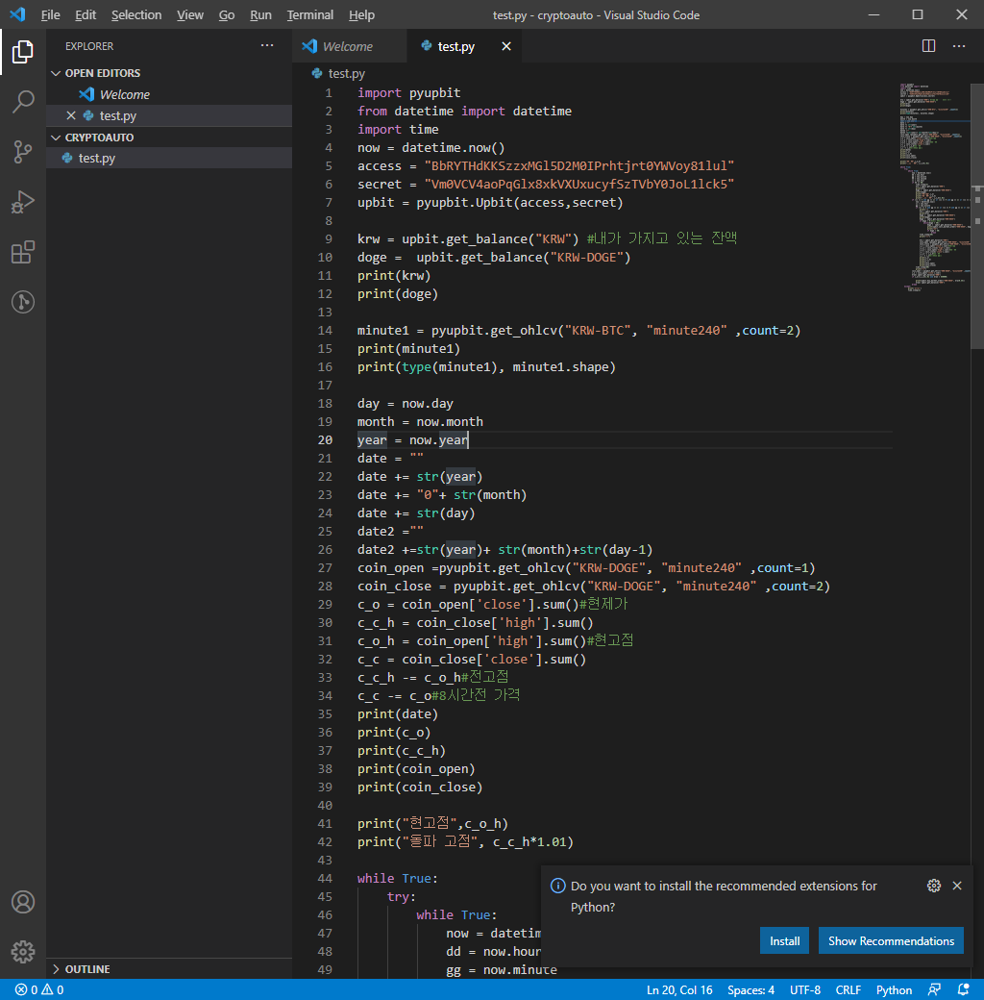
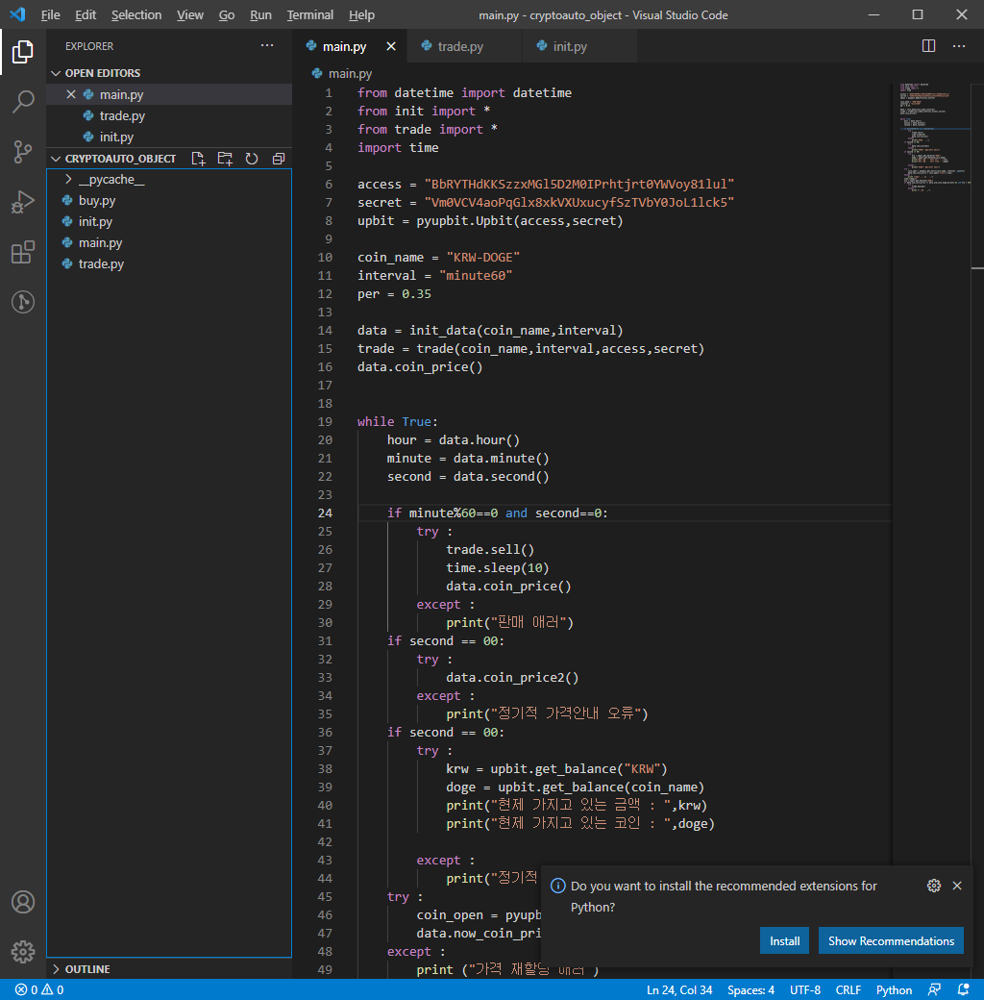

이창중
어지러운 학생
ABOUT ME
공부를 진행하고 싶어도 개인건강 문제로 제대로 진행하기 어려운 학생입니다
project
project
배우고 있는 언어
c++,python,java,Javascript
언어를 공부하는데 큰 어려움은 없지만 키워드가 기억이 잘 안난다
Activities
활동 1
현제 진행중인 활동
python으로 프로그램 구현
현제 비트코인 자동 매매 프로그램을 만들었고 보안 스터디에서 스니핑 스푸핑을 구현하고 설명하기로 헀다
활동 2
개인적으로 배우고 있는 것들
자료구조,컴퓨터 구조
방학부터 독학하고 있었지만 최근에 머리가 너무아파 진행하기 힘들다
etc
관심있는 언어
작심삼일?
c#
최근들어 c#에 호기심이 조금 생겼다
프로그램을 구현하며 느낀것
지원해주는 api를 가저다 써서 만들어서 매우 쉽게 만들었다
프로그램을 만들때는 코드 먼저가 아니라 생각먼저
쓸때없는 호기심으로 프로그램을 작성하는데 그냥 머리에서 대충 생각한걸 구현하니 코드가 매우 지저분해졌으며 보기도 불편했다,나중에 사용할 클래스 함수 변수를 정하고 적어둔뒤 그에따라 다시 구현하니 꽤 만족스러운 결과가 나왔다,이후 만들어진 코드에 여러 부가 기능을 붙이려다 코드가 난해해져서 삭제했다,추가할 코드를 모듈화 해서 추가하려했지만 머리가 아파와서 포기했다

